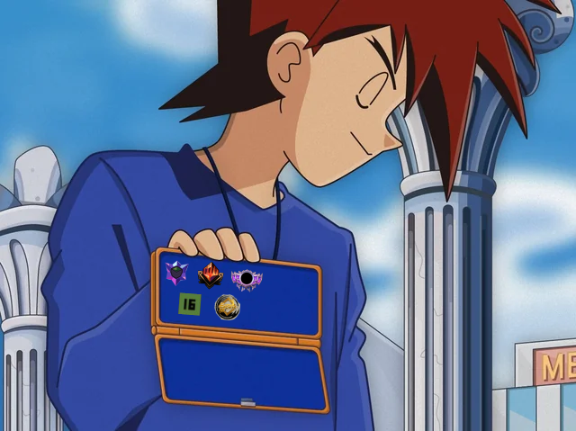
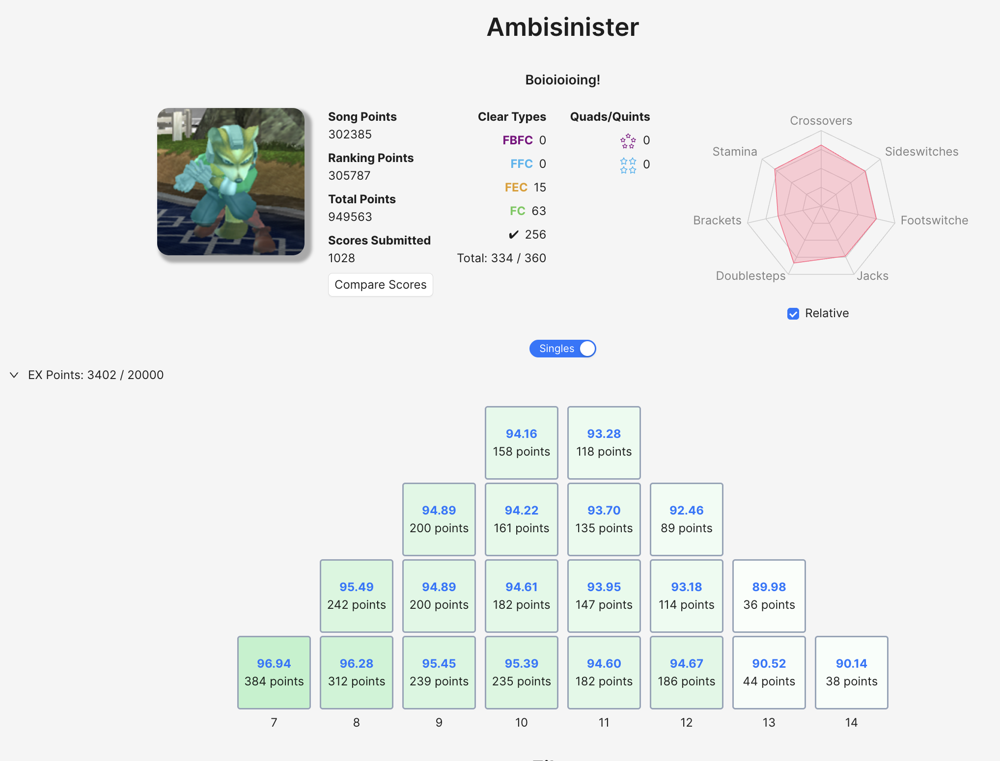

Gaming Milestones
Table of Contents
Gaming Milestones
This is a page where I can put down some milestones for achievements I've made learning games.

Melee
This is my main game. Here's a highlight reel of me playing.
My best result is 49th out of 1552 at Genesis 8. My single best win is probably Ben in TMT ladder, or maybe Beerman in 2016 (seems hard to evaluate now).
I don't really like Slippi Ranked mode. But I did ladder to Master rank in September 2025.
Did this for some reason
— Eryk (@ambisinister.planetbanatt.net) September 30, 2025 at 2:01 AM
[image or embed]
ITG
Stamina
For ITG Stamina, I am a (194 | 16) player.
My first 16 was [16] ITC Jams Vol 4.
Tech
My best result for ITG Tech was ITL 2026, where I finished with 307k ranking points despite exclusively playing in shoes at the arcade, rather than in socks at home. Close behind was ITL 2024 with 305k Ranking Points which was good for 349th place out of roughly 1400 entrants.

I also played some doubles that tournament: I got 56th place out of the maybe 275ish people who submitted doubles scores. A highlight here was getting my first ITG Doubles 12.
ITG Doubles 12 #1!!! pic.twitter.com/6XlzjUu46y
— Eryk (@Ambisinister_) May 21, 2024
TCGs
Magic: The Gathering
September 2025 - Standard Mythic Rank.
I used a Mono-Red Aggro deck.
Got mythic in standard on mtg arena pic.twitter.com/MJtyWjnq6S
— Eryk (@Ambisinister_) September 19, 2025
Legends of Runeterra
October 2025 - Standard Masters Rank.
I used a Viktor-Riven Combo Aggro deck.
Hit masters in legends of runeterra pic.twitter.com/b6CPeAYnJb
— Eryk (@Ambisinister_) October 11, 2025
Sound Voltex
I picked up some Sound Voltex since we have an offline cabinet at work.
I am 7th dan. VF ~12.6, I hit Dandelion around July 2025. I mostly play 14-15s.
I got 7th Dan in sdvx
— Eryk (@ambisinister.planetbanatt.net) September 21, 2026 at 5:06 PM
[image or embed]
Traditional Games
Riichi Mahjong
On Mahjong Soul, I have reached Expert rank.
there are hills everywhere for those with legs to climb them
— Eryk (@ambisinister.planetbanatt.net) October 17, 2025 at 8:36 PM
[image or embed]
ever higher
— Eryk (@ambisinister.planetbanatt.net) October 22, 2025 at 2:38 AM
[image or embed]
Chess
In a past life, I played some chess. I mostly liked tactics puzzles and faster time controls. My lichess profile can be found here. Over the board, I was roughly 1450 Elo in normal time controls and roughly 1550 blitz rating, although I haven't entered a rated tournament in more than ten years now.
Puzzle Games
Tetris: The Grand Master
I have achieved S2 grade in TGM 1, with a level PB in the low 400s.
In TGM2 TAP, I've reached grade 2 537/600.
Speedruns
Nintendo World Championships
I played this for a short time. Some highlights: